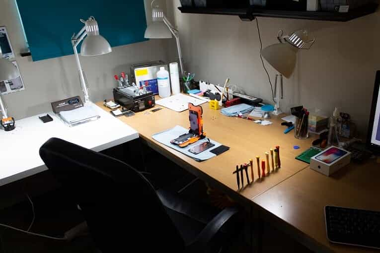
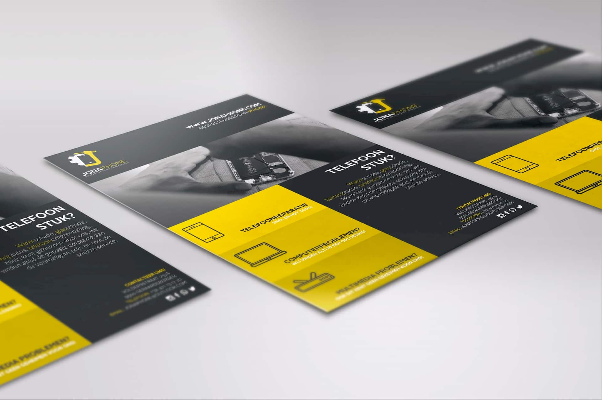
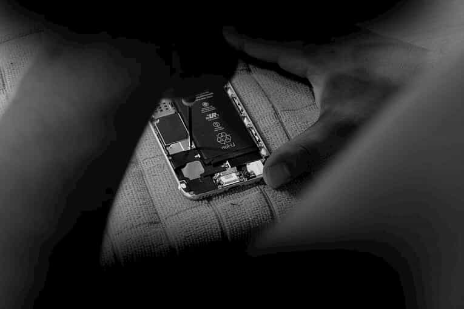

Waarom kiezen voor Jonaphone?
Transparant
We zijn een betrouwbare partner. U mag altijd in de werkruimte blijven gedurende de herstelling. We hebben niets voor u te verbergen.
Top kwaliteit en service
Met ons concept garanderen we een gelijke kwaliteit als een officiële dealer. Toch schatten we ons hoger in met onze 12 maanden garantie, betere prijzen, betrouwbaar en vriendelijk personeel.
Gratis Diagnose
Wanneer u uw toestel binnenbrengt, staan wij parraat om een gratis diagnose te maken van het problemen. Hierbij zullen wij u ook het gepaste advies geven.